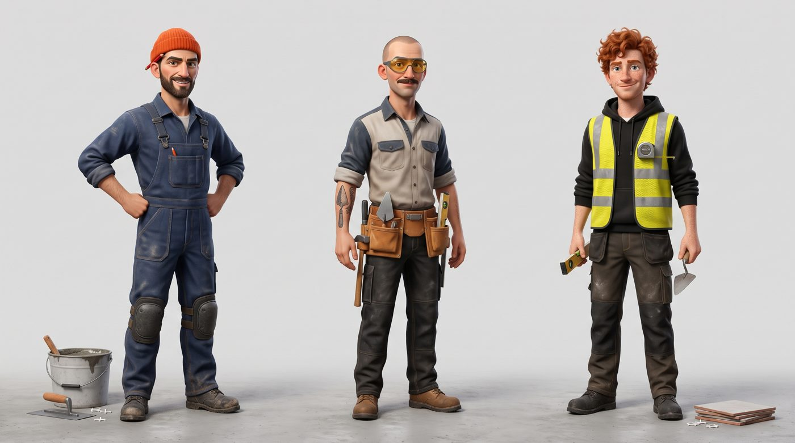

NOWA: Odszkodowanie za lot — „Kasia i kubek wody” (napisy + muzyka, 30 s)
pobierz MP4
Wycena Fachowca — „Niedziela, 22:47” — PEŁNA (lektor + ruch, 60 s)
pobierz MP4
Ta sama — krótka wersja z napisami i muzyką (30 s)
pobierz MP4 · wersja z napisami i muzyką (bez lektora)
Warianty postaci (wybrany nr 1, lewy):

1. Czytnik KSeF — „Piątek, 16:59”
pobierz MP4
2. DAC7 — „Grażyna z Kanady”
pobierz MP4
3. KSeF PRO — „Mruczek audytor”
pobierz MP4
Podgląd roboczy, niepublikowany.